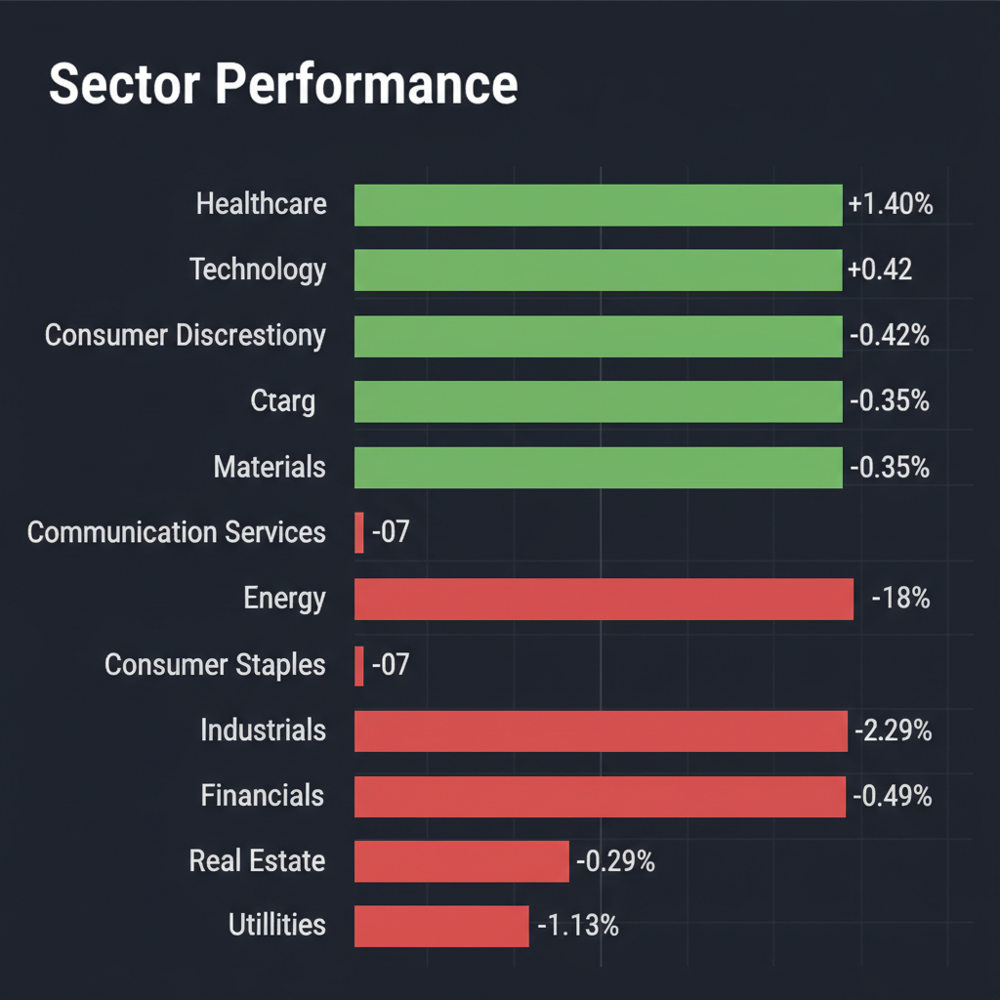
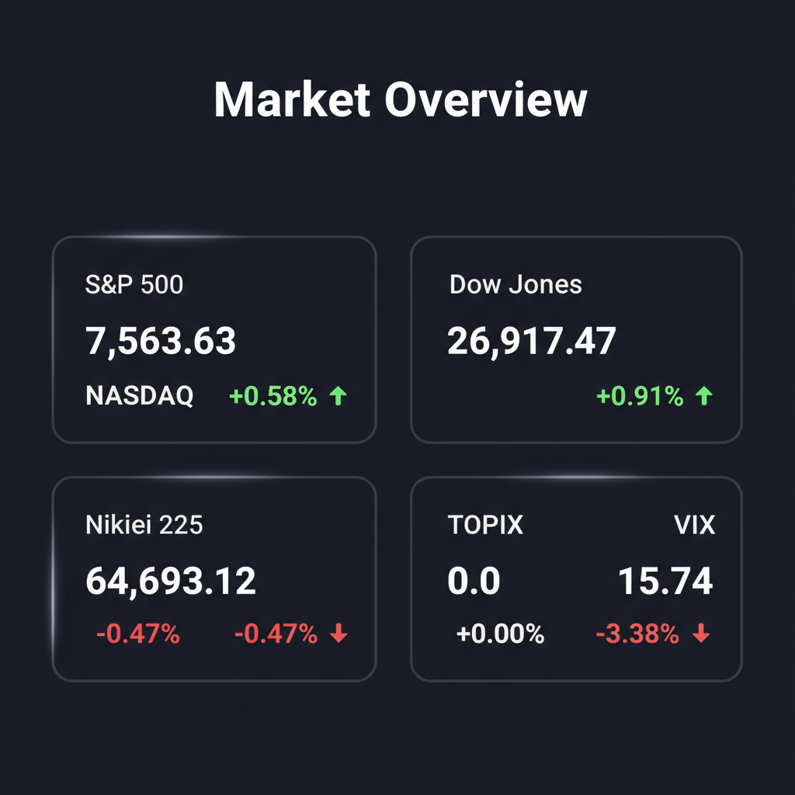

* 米イラン間の停戦延長交渉の進展により主要株価指数は最高値を更新したものの、3年ぶりの大幅なインフレ指標の上昇が確認され、市場は楽観と強い警戒感が交錯する二面性のある局面にあります。 * 高バリュエーションのハイテク株や完璧さを求められる大型小売株への期待値は極限まで高まっており、今後は金利高止まりに耐えうるキャッシュ創出能力の高い「クオリティ株」への選別が求められます。 * 本日の投資戦略としては、安全マージンが確保された日系の中小型バリュー・ITサービス株への投資と、エネルギー株やゴールドなどの実物資産への分散によるリスクヘッジを推奨します。
* オービーシステム（5576.T） [平均スコア 7.8/10] * 推奨理由: 地方銀行や社会インフラ向けのシステム開発を強みとし、売上高の約7割を日立グループ向けが占める安定した事業基盤を有しています。2026年3月期の業績は売上高86.55億円（前年比12.6%増）、営業利益6.72億円（同19.5%増）と大幅な増収増益を達成し、今期は20円の大幅な増配を予定（配当利回り4%超）していることから、高金利下における強力な下値支持（安全マージン）と持続的な成長性を兼ね備えた最注目の中小型クオリティ株です。
* 野村マイクロ・サイエンス（6254.T） [平均スコア 6.2/10] * 理由: 半導体製造に不可欠な「超純水」技術で世界トップクラスを誇り、2027年3月期は営業利益160億円（前期比140%増）と劇的な業績回復を見込んでいます。しかし、2026年3月期連結決算が営業利益56.6%減益と非常にボラティリティが高く、現在の株価は決算発表後に乱高下を繰り返しているため、株価の方向感がテクニカル的に定まるまでは押し目待ちの様子見が賢明です。 * 日本触媒（4114.T / 提供データ上は4116.Tと表記） [平均スコア 4.6/10] * 理由: 高吸水性樹脂（SAP）で世界首位の地位を占めており、配当利回りが4%を超え連続増配を維持している点はインカムゲイン投資家にとって魅力的です。一方で、直近の2026年3月期決算は主原料である原油・ナフサの市場変動や製品価格下落により営業利益が前年比8.0%減と減収減益になっており、原材料コストの価格転嫁遅れリスクが依然として株価の重石（年初来安値付近）となっています。 * アンバレラ（AMBA） [平均スコア 4.0/10] * 理由: エッジAIおよび自動運転向け画像処理半導体（SoC）の技術的先駆者であり、2027会計年度第1四半期の売上高は前年比16.9%増と市場予想を上回りました。しかし、第2四半期の売上高ガイダンス中間値が市場予想を下回ったことで決算後の時間外取引で株価が下落したほか、営業赤字が継続しているため、金利高止まり局面における財務リスクを考慮すると、テクニカルなサポートラインの底打ちを確認するまでエントリーは控えるべきです。
* 該当なし * 警戒理由: 本日の合議において平均スコア4.0未満に分類された注目銘柄はありませんが、個別ニュースにおいて、現在極めて高いマルチプル（割高なバリュエーション）で取引されている「コストコ（COST）」については、決算ミスが一切許されない極限状態にあり、安全マージンが皆無であるため個別での新規買いは極めてリスクが高いと判断しています。
* 1位：ヘルスケア（XLV） * 理由: インフレ耐性が高く景気動向に左右されにくいため、金利高止まり局面における強力な防衛手段（セーフヘイブン）となります。HealthEquityの見通し上方修正が示すように、堅調な財務実績を背景に資金逃避先としてアウトパフォームを継続しています。 * 2位：テクノロジー・ITサービス（XLK） * 理由: 生成AIやDX化を推進するエンタープライズITへの需要は非常に強固です。ただし、金利上昇に脆弱な高PERグロース株は避け、NetAppのような強気なガイダンス（業績見通し）を出せるキャッシュリッチなクオリティ株、およびオービーシステムのような堅実なシステム開発会社に厳選する必要があります。 * 3位：エネルギー・コモディティ（XLE） * 理由: 米国の対イラン制裁強化やジェット燃料市場の混乱など、地政学リスクに伴うエネルギーの供給制約が継続しています。マクロインフレ再燃と地政学的テールリスクの双方をカバーするための最強のヘッジセクターとして機能します。 * 4位：消費財・小売（XLY / XLP） * 理由: コストコのようにブランド力が高くインフレ下でも需要が底堅い企業がある一方で、過剰に織り込まれた期待からバリュエーションは極めて割高です。決算のわずかな未達で急落するリスクを孕むため、ニュートラル（中立）な姿勢に引き下げます。 * 5位：公益（XLU）および 不動産（XLRE） * 理由: インフレ指標が3年ぶりの年間上昇率を記録する中、米長期金利の再上昇が最もダイレクトに逆風となる金利敏感セクターです。本日の市場でも大きく下落しており、アンダーパフォーム（回避）を推奨します。
* 日付未定（今週中）：ドナルド・トランプ氏による「米イラン停戦延長MOU」の承認判断 * 地政学リスクの行方を左右する最大の不確定要素であり、承認されれば株価支援、拒否されれば中東緊迫化による原油高を招くため最重要監視対象です。 * 日付未定（今週中）：コストコ（COST）決算発表 * プレミアム価格の正当性が試される極めて高い期待値の決算であり、米国小売全体のセンチメントを左右します。 * 日付未定：米国長期金利およびFRB高官発言 * 3年ぶりのインフレ高進を受けて、利下げ見通しに関するタカ派的な発言や、債券金利の急騰（5%に向けた動き）がないか注視が必要です。 * 随時：東北地方の上場企業（22社）の本決算・配当予想の開示 * 国内の地域景気動向と、高配当・株主還元強化の流れがどこまで波及しているかを見極める材料となります。
* トランプ氏の合意拒否と原油価格の急騰（スタグフレーション・リスク） * イランとの停戦合意が決裂し、米制裁強化やホルムズ海峡封鎖の懸念から原油が100ドルを突破した場合、世界的な「インフレ加速と景気後退」が同時に進行します。 * 米インフレ粘着に伴う「年内利下げゼロ（再利上げ）」シナリオ * 3年ぶりの大幅インフレ高進が継続することで、米10年債利回りが5%を超え、NASDAQなどの高PERハイテク株から急速な資金流出が起きるマルチプル・コントラクションが発生します。 * 為替（USD/JPY）急変動と日銀の早期利上げ圧力 * 新NISA資金によるキャピタルフライトが構造的円安を招き、国内の輸入インフレを加速させます。日銀のタカ派化や急激な円高反転は、日本株全体の急激な利益確定売り（キャリートレード巻き戻し）を引き起こすトリガーとなります。
* キャッシュポジションを20〜30%程度まで速やかに引き上げる * 指数史上最高値という楽観の中で、インフレ再燃の嵐に備え、利益確定売りを進めて手元現金を確保してください。 * オービーシステム（5576.T）などの高配当（4%超）かつ連続増配の中小型バリュー株を打診買いする * 頑健なバランスシートと確実なインカムゲインを持つ銘柄へ資金を避難させ、下値プロテクションを構築します。 * アーム（ARM）などの超高PER半導体グロース株の利益を一部（半分程度）確定する * 青天井モードで買われすぎ水準にあるハイテク株は、金利上昇局面で真っ先に売られるため、勝ち逃げを優先します。 * エネルギーETF（XLE）またはコモディティを追加し、地政学・インフレヘッジを完了させる * 万が一の中東停戦決裂による原油急騰に備え、ポートフォリオのディフェンス力を強化します。
* 現在の市場環境の評価：一部現金化の検討を推奨 * S&P500やNASDAQが過去最高値を更新していますが、現在のバリュエーションは「完璧な地政学の緩和」と「インフレの沈静化」を前提として設計された砂上の楼閣です。3年ぶり最大の年間上昇率となった米インフレ指標の悪化は、金利高止まり（Higher for Longer）を強固にし、株価を支える割引率の上昇を招きます。したがって、現状のインデックスの「全部保持」ではなく、全体の10〜15%程度を部分的に利益確定し、現金比率を厚くすることを推奨します。 * 今後1〜3ヶ月の見通し：下落リスクを含んだ神経質なレンジ相場 * インフレ指標の粘着性がFRBの利下げ期待を完全に押し潰し、金利は高止まりします。さらに、トランプ次期大統領の停戦承認プロセスにおける突発的な不確実性がヘッドラインを揺らすため、ボラティリティが上昇しやすく、最高値圏からのテクニカルな調整（5〜10%の押し目形成、または偽のブレイクアウトからの下落）が発生しやすいサイクル後期の特徴が色濃く出ると見通します。 * 積立投資への影響：定期積立は維持し、一括の追加投資は控える * 毎月のドルコスト平均法による自動積立は、将来の上昇余力を取り込むために淡々と継続すべきであり、タイミングを調整する必要はありません。一方で、一時金やボーナスなどの「一括追加投資」については、現在は割高感が極めて強いため実行を控え、インデックスが主要サポートライン（50日または200日移動平均線）まで調整する局面を待つのが最も合理的です。 * 注意すべきイベント：マクロの転換点となるイベントを厳視 * トランプ氏による対イラン停戦MOUの意思決定、次回のFOMCでの金利ドットチャート修正、米雇用統計および消費者物価指数（CPI）の発表。また、AI向け半導体大手の業績見通し（ガイダンス）修正は、インデックス全体のマルチプルに直結するため注意が必要です。 * リスクシナリオと対応策：インフレ・地政学ショック時の防御策 * リスクシナリオ：停戦MOUをトランプ氏が拒否、ホルムズ海峡周辺での紛争勃発により原油価格が1バレル100ドルを突破。これに伴う米インフレの再加速から「年内利下げゼロ、または追加利上げ」が囁かれ、長期金利が5%超へ急騰し、S&P 500が10〜15%急落するシナリオです。 * 対応策：インデックスの新規買い付けを完全にストップし、確保していたキャッシュポジション（20〜30%）を維持したまま静観します。一方で、エネルギー株ETF（XLE）や金（ゴールド）、VIXコールオプションなど逆相関のアセットで損失を相殺し、地政学・金利上昇の底打ち（インフレ指標の明確な下落トレンドへの反転）が確認されてから、インデックスの割安な水準での買い下がりを開始します。
各エージェントがWeb調査結果を踏まえて独立に10段階評価した結果です。平均7以上=強気、4〜6.9=中立、4未満=弱気。
| 銘柄 | ファンダメンタルズアナリスト | テンバガーハンター | マクロエコノミスト | テクニカルストラテジスト | リスクマネージャー | 平均 | 判定 |
| 5576.T | 9 ２期連続最高益予想と配当４％超で下値支持が強固 | 8 時価総額69億の超小型DX株で大化け候補 | 9 二期連続の最高益予想と大幅増配で、高金利下でも極めて堅調。 | 8 2期連続過去最高益と大幅増配で下値支持が強く押し目買い好機 | 5 日立依存度７割の顧客集中リスクと超小型株特有の流動性難 |
7.8 | 強気 |
| 6254.T | 5 今期大幅回復予想も前期減益と顧客偏重で不確実性高い | 10 今期営業益140%増予想、超純水独占の絶対王者 | 7 今期営業益１４０％増の急回復予想だが、高変動率に注意。 | 6 ボラティリティ高く方向感模索も、大幅増益予想で調整は押し目 | 3 期待先行の超強気予想は未達時の急落リスクが極めて高い |
6.2 | 中立 |
| 4116.T | 3 減収減益に加え原油高によるコスト転嫁遅れリスクあり | 3 低成長な成熟素材株でテンバガー期待薄 | 8 配当４％超と連続増配で下値が堅く、技術的にも好転。 | 7 移動平均線が収斂から上放れの初期、配当利回り4％超も魅力 | 2 原材料高の転嫁遅れで減収減益、年初来安値で下落継続 |
4.6 | 中立 |
| AMBA | 3 営業赤字が継続する中、次期ガイダンスが予想に届かず | 9 エッジAIの覇者、ガイダンス微達未達の押し目は買い | 3 次期ガイダンスが予想未達かつ赤字継続で、マクロ逆風強い。 | 3 ガイダンス未達で時間外下落、サポート割れの売りシグナル | 2 営業赤字継続とガイダンス未達で金利上昇局面の脆さ露呈 |
4 | 中立 |
エージェントが推奨した中小型株について、Google検索で最新情報を調査した結果です。
「4116.T」は日本触媒のティッカーシンボルではない。正しいティッカーシンボルは「4114.T」であるため、日本触媒（4114）について調査しました。
銘柄: 5576.T (株式会社オービーシステム)
以下に、投資判断に必要な最新情報をまとめます。
1. 企業概要（事業内容、時価総額、業界でのポジション） 株式会社オービーシステムは、金融、産業流通、社会公共、およびITイノベーションの4つのサービスラインでシステムインテグレーションサービスを提供している企業です。特に地方銀行を軸とした金融分野に強みを持ち、小売、医療、社会公共と幅広い領域を手がけています。日立グループ向けが売上の約7割を占めており、安定した事業基盤を持っています。 DX化や生成AI・クラウドサービス関連の需要増加に対応するシステムインテグレーターとして、社会ニーズの解決に貢献しています。 同社は1972年8月25日に設立され、2023年6月21日に東証スタンダード市場に上場しました。 現在の時価総額は6,895百万円です（2026年5月28日時点）。 業界全体としては、DX化の推進によりシステム市場のパイが拡大しており、各社が得意分野で棲み分けができているため、特定の競合他社との激しい競合は少ないとされています。
2. 直近の業績・決算情報（売上、利益、成長率） 2026年3月期の連結業績は、売上高が86.55億円（前年同期比12.6％増）、営業利益が6.72億円（同19.5％増）と増収増益を達成しました。 M&Aによる事業拡大や、生成AI・クラウドサービス関連の需要増加が全サービスラインの成長に寄与しています。 2027年3月期についても、引き続き増収増益を見込んでおり、経常利益は前期比23.6％増の9億円と、2期連続で過去最高益を更新する見通しです。 また、前期配当を5円増額し、今期は20円の増配を予定しています。 過去12四半期にわたり業績は改善傾向にあり、売上高は右肩上がりに拡大しています。
3. 最新ニュース・材料（直近1-2週間の重要なニュース） 直近の重要なニュースとしては、2026年4月22日大引け後に発表された2026年3月期決算があります。 この決算発表では、今期の経常利益が24％増で2期連続の最高益となる見通しであること、および前期配当の5円増額と今期の20円増配が公表されました。 2026年5月28日には、ダイヤモンドZAIにて「高配当＆株価上昇」の両方で儲かる銘柄として、オービーシステムが日本高純度化学と共に注目されている旨の記事が掲載されました。
4. アナリスト評価・目標株価（あれば） 現在のところ、5576.Tに関する具体的なアナリスト評価や目標株価は確認できませんでした。
5. リスク要因（競合、規制、財務上の懸念） 主要なリスク要因としては、売上の約7割を日立グループ向けが占めている点が挙げられ、特定の顧客への依存度が高い集中リスクが存在します。 競合環境については、システムインテグレーション業界全体の市場拡大により、各社が専門分野で棲み分けをしている状況であるため、現時点では特定の競合他社との激しい競合は少ないとの見方もあります。 財務面では、自己資本比率が高水準を維持し、有利子負債が減少傾向にあるなど、概ね安定しています。
6. 株価の最近の動き（直近のトレンド） 直近の株価は、「最近とどめない動き」と表現されるように、変動が見られます。 2026年5月27日の終値は2,880円でした。 2026年5月11日から5月27日までの期間では、2,780円から2,962円の間で推移しており、出来高は日によって変動しています。 2026年4月22日には、株価が4.4%上昇したと報じられました。
野村マイクロ・サイエンス (6254.T)に関する投資判断に必要な最新情報は以下の通りです。
アンバレラ (NASDAQ: AMBA) に関する最新情報は以下の通りです。
2026年5月28日時点の時価総額は約33.55億ドルです。
直近のトレンドとしては、2026年5月26日時点での株価は、5日移動平均線、25日移動平均線、75日移動平均線すべてが上昇しており、上昇トレンドにあることを示しています。 52週間の株価レンジは48.30ドルから96.69ドルで推移しています。